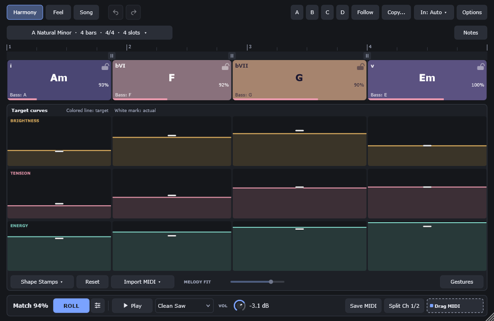
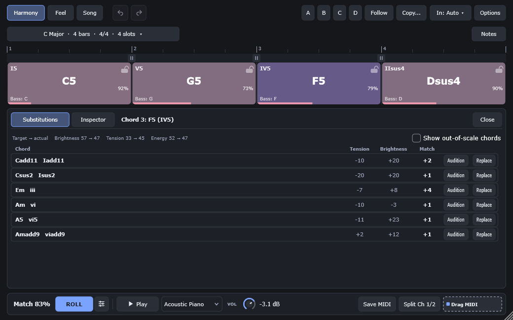
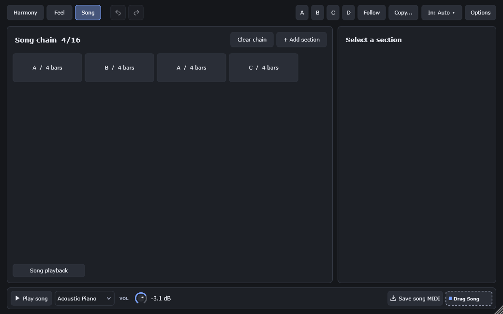

Get started
- Open ChordSlots Standalone or insert ChordSlots as an instrument in your DAW. Keep the built-in preview instrument audible while you learn the controls.
- In Harmony, open the loop summary and set four bars, four slots, and a key. Open Roll Settings, pick a mood or draw your own targets, then press Roll.
- Press Play if the preview is stopped. Lock a chord you like and draw a new Tension target in another slot. Listen to what changes when you release the edit.
- Open Feel, choose a comping pattern, and use Drag MIDI or Save MIDI to take the performance into your project.
Harmony

Open the loop summary
- Key and scale
- Set the tonal context for the curves, chord spelling, note suggestions, and future rolls. Scales include Major, Minor, Dorian, Phrygian, Lydian, Mixolydian, Locrian, Harmonic Minor, Melodic Minor, and Phrygian Dominant.
- Key Actions
- Use Transpose to move the existing chords and notes by semitones. Use Go to Relative to switch between relative major and minor when available.
- Bars, meter, and slots
- Set 1–8 bars and up to 16 chord slots. Choose 4/4, 3/4, 6/8, or Host to follow the DAW’s meter. A slot holds one chord across its span. Changing the slot count runs a roll.
- Grid
- Choose quarter, eighth, sixteenth, or thirty-second note snap. Quarter, eighth, and sixteenth triplets are marked T. Snap sets where timing boundaries can land.
Work with the chord timeline
- Click a chord card to open its Inspector. Shift-click to hear the slot. Click its lock to keep the chord and voicing through Roll.
- Click an empty spot in the narrow timing strip above a chord to split the slot. Drag the boundary handle to move the chord change. Double-click the handle to lock it in place.
- Right-click a separator for Lock separator or Remove separator. Right-click a chord for alternatives, bass choices, chord lock, Split here, or Merge with previous where available.
- Notes switches the timeline to a piano-roll view of the voicing. Click a chord label to inspect it or click the notes area to hear it. Gestures shows the timeline shortcuts in the editor.
Draw and read the curves
Drag up to raise a target or across the lane to edit several slots. The colored line shows your target and the white dash shows what the current chord or voicing measures. Hover or drag for the values and their difference.
- Brightness
- Guides chord color and upper-voice register. Releasing an edit regenerates the affected unlocked slots.
- Tension
- Guides how settled or unsettled the chord feels in the key and after its neighbor. The last-to-first transition counts. Releasing an edit regenerates the affected unlocked slots.
- Energy
- Changes base MIDI velocity and can add or remove octave doublings, depending on the voicing. The affected unlocked slots keep their chord identities.
- Shape Stamps and Reset
- Apply Rise, Drop, Arch, Pop Build, or Valley to all three lanes, then generate a progression. Reset sets all three lanes to 50% and rolls.
- Match
- Shows how closely measured Brightness and Tension follow the targets. Chord cards show individual slot scores. Use your ears to pick the best musical take.
Roll Settings
Click the sliders icon beside Roll. Set what can change, then press Roll to generate a new version. Turn on Play after Roll to hear it immediately.
- Mood Preset
- Euphoric, Uplifting, Epic, Melancholic, Dark, Tense, Dreamy, and Hard each supply a scale, targets, Adventure, and Syncopation, then run a roll. Manual curve edits show up as Custom.
- Keep when rolling
- Rhythm keeps the slot cuts. Roots keeps the chord roots. Colors keeps chord qualities. Voicing preserves the registers and inversions of chords that stay the same. Use a slot lock for one chord or a separator lock for one boundary.
- Adventure
- Raise it to let the engine consider more borrowed notes, chord colors, and roots outside the scale.
- Variety
- Raise it when repeated rolls sound too similar. Lower it to favor closer matches among the available choices.
- Syncopation
- Encourages unlocked changes to land off the regular beat during a roll. Leave Rhythm unlocked to hear this change.
More options
- Bass Motion
- Lets the search use bass inversions for smoother movement between chords. Use the Bass Pattern in Feel to control when bass notes play.
- Ending
- Free leaves the ending open. Resolve to Tonic asks for a return to the home harmony. Lead Back to Start favors a final chord that leads into the first. Locked chords still take precedence.
- Chord Transitions
- Auto uses the mood or scale to choose a transition style. Pick Major, Minor, or Extended harmony to set it yourself. Free lets the other search preferences guide the choices without the song-data transition preference.
- Voicing
- Choose Close, Piano, Spread, Drop 2, Drop 3, Rootless, or Stacked. Close and Spread change spacing, Drop styles lower a voice to open the chord, Rootless leaves room for the separate bass, and Stacked can add octave weight. Changing style revoices the existing progression.
Chord Inspector
Click a chord in Harmony to open the selected-slot panel. Use Substitutions to compare options or Inspector to edit the chord directly.

- Substitutions
- Use the suggestions and their Brightness, Tension, and Match differences to find a candidate. Enable Show out-of-scale chords to include them. Click Audition to hear an alternative, or hold to hear it in the progression. Choose Replace to commit the chord. Auditioning leaves your progression and undo history intact.
- Root and quality
- Choose a root note and chord quality directly. Roll Root tries a different root for this slot. Roll Color tries a different quality. The root buttons indicate pitches that can also work as melody notes over the current chord.
- Invert Up / Invert Down
- Raise the lowest upper-chord voice an octave or lower the highest an octave. The separate bass stays in place. The button is unavailable when the move falls outside the allowed voicing.
- Change Bass
- Cycle through bass options or pick an available bass note directly. This changes the separate bass, which you can also pick from the chord’s right-click menu.
- Chord lock
- Keep this slot during generation. You can still edit it by hand. Use a separator lock to protect its timing boundary as well.
Bring in a MIDI idea
- Analyze MIDI
- Choose a
.midor.midifile to extract target curves from the file and roll a progression to fit them. You can also drop the file directly onto the target lanes. - Harmonize Melody
- Choose a MIDI file with pitched notes. ChordSlots picks a track and rolls against the melody. Export the melody by itself when you want to control which part is used. The search favors chords that fit long notes and notes beginning on strong beats.
- Melody Fit
- Adjust how strongly the imported notes influence Roll. At 0% the melody stays loaded and the search ignores it. Use Clear Melody in the import menu to remove it.
Feel
Use Feel after you have a progression. The piano roll and accent lane show the note pattern, timing, and dynamics as you adjust the performance panel. Click a slot in the piano roll to audition it.

- Comping
- Open the browser to choose how the upper chords are played. Try Sustain, quarter- or eighth-note pulses, Offbeat Reggae, Ballad Stabs, Trap Stabs, Triplet Swing, 3-2 Clave, Garage Shuffle, Cinematic Push, the SHLD Pop, Pop 2, Soul, and Hip Hop patterns, or Arp Up and Arp Down. Use the rhythm preview to audition a pattern while playback is stopped.
- Bass Pattern
- Sustain holds the bass. Octave pump pulses between registers. Offbeat 8ths plays on offbeats. 808 legato uses longer linked notes. Walking steps toward the next bass note. Choose the pattern name to apply it or audition it in the browser.
- Strum
- Spread upper voices by up to about 80 ms. Positive plays low to high, negative plays high to low, and zero plays them together before other timing effects.
- Accent
- Emphasize the highest chord note and soften the inner voices to pull the top line forward.
- Humanize
- Add small changes in timing and velocity. Roll feel gives those variations a fresh pattern while keeping the harmony.
- Gate
- Set how long notes are held within their rhythmic duration. Lower values shorten the notes and leave more space between hits.
Variations A–D
Use the four buttons in the header to keep independent versions of your progression. Use Copy… to duplicate the current variation into another slot, then edit the copy. For example, start with a verse in A and copy it to B before raising the chorus Energy.
With Follow on, the editor tracks the playing variation and clicking a letter also requests a playback switch. Turn Follow off to edit another variation while the current one plays. Playback switches use the Switch Quantize plugin parameter, which your host may expose. Choose Next Bar, Next Slot, or Immediate. Each variation has its own Undo and Redo history of up to 64 steps.
Song
Open Song to assemble up to 16 sections from your variations. Each section plays one pass of its chosen variation, so a four-bar variation contributes four bars to the chain.

- Add section
- Append a section, select its card, and choose a variation. Reuse a variation in multiple sections to build repeats.
- Transpose
- Shift the selected section by up to 48 semitones in either direction, subject to the available MIDI pitch range. The shift applies to that section of the arrangement.
- Remove section / Clear chain
- Remove the selected section or clear the arrangement. The A–D source variations remain available.
- Song playback
- Enable the chain for DAW playback. Play song previews the arrangement. Use Save song MIDI or Drag Song to export it.
Playback and MIDI In
Play and Stop control the local preview. The sound menu offers Clean Saw, Rhodes EP, Felt Piano, and Acoustic Piano. Vol sets preview volume. In a DAW, ChordSlots uses the host’s tempo and timeline position. Options lets you toggle hover tooltips. In Standalone, it also gives access to audio/MIDI device settings and save, load, or reset for the app state.
Play slots from a keyboard or pads
- Auto
- Plays the loop and gives mapped keys priority while they are held.
- Trigger Only
- Silences automatic loop playback so you can perform slots from a controller or recorded MIDI notes.
- Loop Only
- Plays the loop and ignores incoming slot triggers.
- Note to slot mapping
- White Keys starts at C3 and steps through the white keys. Chromatic starts at C3 and advances one slot per semitone. Pads uses the chromatic layout from C1. The displayed starting note maps to the first slot. When keys overlap, the most recently held mapped key takes priority.
MIDI export and routing
- Save MIDI / Drag MIDI
- Write a standard MIDI file or drag the current variation into a MIDI or instrument track. The clip carries generated notes, performance timing, velocity, and chord markers. Choose the sound for those notes in your DAW.
- Split Ch 1/2
- Send upper chords on MIDI channel 1 and monophonic bass on channel 2. Use the separate chord and bass drag tiles to place the parts on different tracks.
- Save song MIDI / Drag Song
- Export the full chain with its transpositions and section markers. Song files use separate chord and bass tracks with either Split setting.
- Live routing
- In a DAW that exposes the plugin’s MIDI output, set a receiving instrument track to take MIDI from ChordSlots. For Logic, the project also provides a separate AU MIDI FX build that sits before the instrument on the same track. If your host does not expose the output, import the saved MIDI file or drag the clip into the arrangement.
Shortcuts
- Space
- Toggle preview playback when the editor receives keyboard input.
- 1–4
- Switch to variation A–D.
- L
- Toggle the selected chord lock.
- R
- Roll the selected slot in Harmony. With no slot selected, roll the progression.
- Esc
- Close Roll Settings or the chord Inspector.
- Ctrl / Cmd + Z
- Undo in the current variation.
- Ctrl / Cmd + Shift + Z or Ctrl / Cmd + Y
- Redo in the current variation.